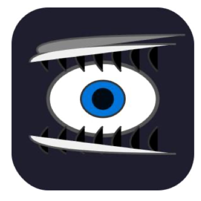
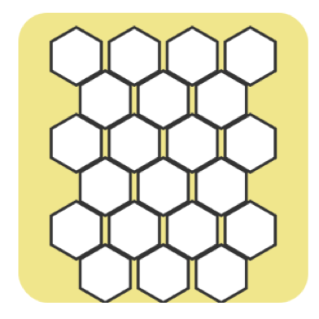
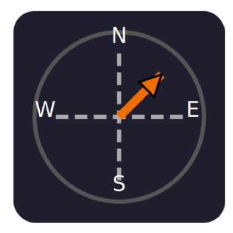
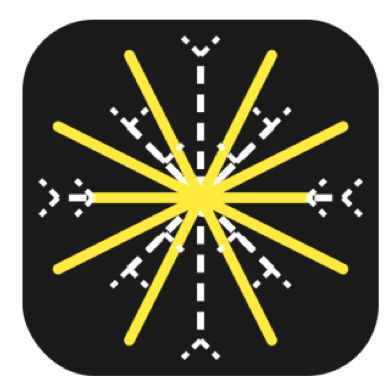

01—02
Semantic Fidelity
High-level concept readability and the visual presence of major components, distinctive cues, and prompt-specific relations.




01 / OVERVIEW
Instance-aware.
Multi-axis.
Ground-truth-free.
Generating Scalable Vector Graphics (SVG) code from natural-language instructions is an open-ended task without absolute visual ground truth, leaving both evaluation and policy optimization without a faithful signal. Scalar metrics (CLIP, Aesthetic) calibrated on natural images transfer poorly to stylized vector content, and reusing them as RL rewards triggers reward hacking. We address both limitations with rubric-based scoring.
We first establish empirically that prompting a vision–language judge with a multi-axis rubric correlates with human judgments far better than scalar metrics, both across samples and within instructions. Building on this finding, we introduce RULER (Instance-aware Rubric Rewards for Reinforcement LEaRning), which converts each instruction into an instance-aware rubric of six items spanning semantic, visual, and stylistic axes; a judge VLM scores rendered rollouts item-by-item, and the weighted satisfactions form a fine-grained reward optimized via Group Relative Policy Optimization.
Because the rubric is derived from text alone, RULER requires neither paired SVG ground truth nor human preference labels. On MMSVG-Illustration and MMSVG-Icon, RULER lifts the rubric score from 0.432/0.395 to 0.693/0.683, surpassing dedicated SVG specialists and matching the substantially larger DeepSeek-V3, with ablations identifying rubric design as the active lever for RL on open-ended SVG generation.
02 / MOTIVATION
Standard scalar metrics (CLIP and Aesthetic) mis-rank or fail to penalize a broken SVG, whereas our Rubric score aligns with human preference.
03 / THE METHOD
Because the rubric is derived from text alone, RULER requires neither paired SVG ground truth nor human preference labels.
High-level concept readability and the visual presence of major components, distinctive cues, and prompt-specific relations.
Silhouette and form refinement together with composition and canvas design.
Rendering finish and execution cleanliness coupled with style cohesion and designed visual interest.
04 / EXPERIMENTS
RULER outperforms every baseline family on the primary Rubric metric across both benchmarks.
To capture holistic visual quality, we additionally introduce a Rubric score that prompts GPT-5-mini (OpenAI, 2025) as an independent VLM-as-Judge to rate each rendered SVG against a shared universal rubric; we treat this Rubric score as the primary indicator of overall quality.
As shown in Table 3, RULER achieves a non-tie win rate above 50% against every evaluated baseline, ranging from 53.3% against VectorFusion to 96.5% against JanusCoder.
To isolate the contribution of our reward design, we fix the base model (Qwen3-8B) and the GRPO optimizer, and vary only the reward signal across four configurations.
To examine whether the effectiveness of RULER depends on a particular base model or rubric generator, we evaluate the framework across different base-model scales and rubric sources while keeping the remaining training setup unchanged.
EVALUATOR ALIGNMENT
RUBRIC ABLATION
05 / QUALITATIVE COMPARISON
Figure 5 presents qualitative comparisons on representative icon-style prompts. Compared with the baselines, RULER generates SVGs that are more prompt-faithful, visually expressive, and stylistically polished.
06 / REFERENCE
If you find this work useful,
please cite our paper.
@misc{ran2026rulerinstanceawarerubricrewards,
title={RULER: Instance-aware Rubric Rewards for SVG Generation},
author={Hangyu Ran and Yuhao Zheng and Yingying Zhang and Kevin Qinghong Lin and Han Peng},
year={2026},
eprint={2609.25270},
archivePrefix={arXiv},
primaryClass={cs.CV},
url={https://arxiv.org/abs/2609.25270},
}